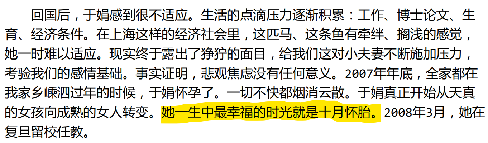
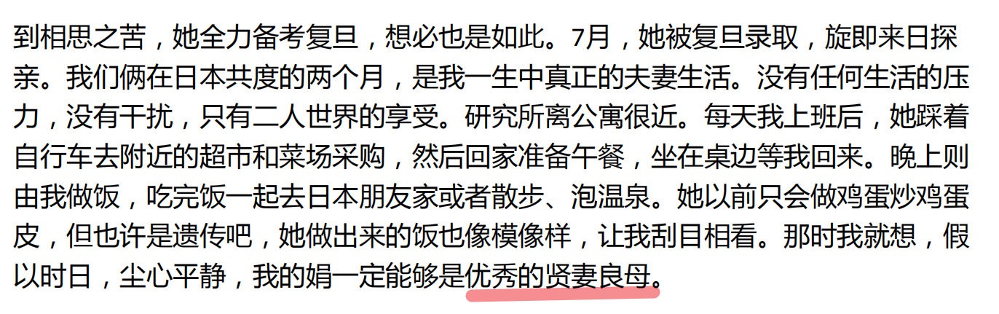
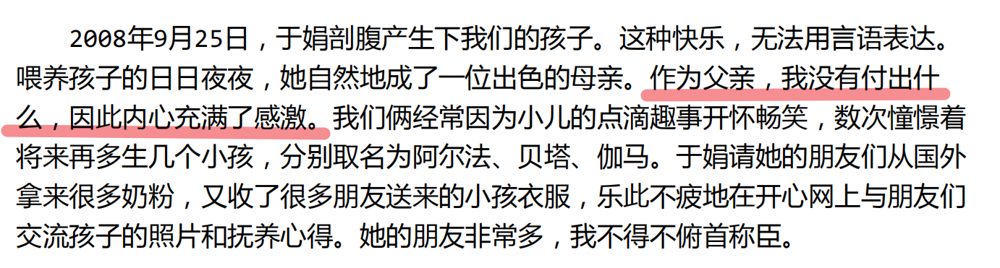
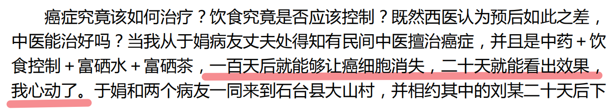
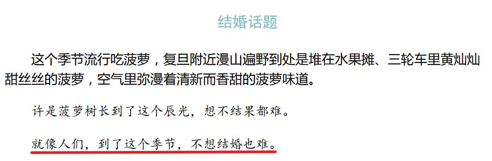
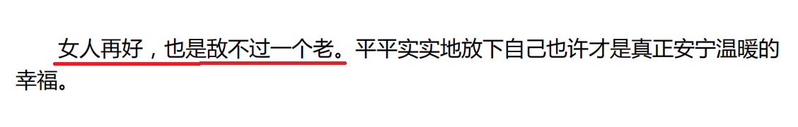

此生未完成读后感
此生未完成，作者于娟（1978年～2011年4月19日）
摘抄
生病后才不得不承认，自己的性格不好：我太过喜欢争强好胜，太过喜欢凡事做到最好，太过喜欢统领大局，太过喜欢操心，太过不甘心碌碌无为。
我曾经试图用三年半时间，同时搞定一个挪威硕士、一个复旦博士学位。然而博士终究并不是硕士，我拼命日夜兼程，最终没有完成给自己设定的目标，恼怒得要死。现在想想，就是拼命拼得累死，到头来赶来赶去也只是早一年毕业。可是，地球上哪个人会在乎我早一年还是晚一年博士毕业呢？
我曾经试图做个优秀的女学者。虽然我极不擅长科研，但既然走了科研的路子，就要有个样子。我曾经的野心是两三年搞个副教授来做做，于是开始玩命发文章、搞课题，虽然对实现副教授的目标后该干什么，我非常茫然。当下我想，如果有哪天，像我这样吊儿郎当的人都做了教授，我会对中国的教育体制感到很失落。
为了一个不知道是不是自己人生目标的事情拼了命扑上去，不能不说是一个傻子干的傻事。得了病后我才知道，人应该把快乐建立在可持续的长久人生目标上，而不应该只是去看短暂的名利权情。
也许只有我自己知道我是顶着读书的名头，大把挥霍自己的青春与生命。因为
相当长一段时间里，我是著名的不折不扣2W女。所谓2W女是指只有在考试前两个星
期才会认真学习的女生：2 weeks，同时考出的成绩也是too weak。
可是银子说穿了也只是银子，CPI上涨，通货膨胀，我就是一颗心操碎了，三十年后又能省下多少呢？假如爹妈三十年前有一万块，基本上可以堪比现在的千万富翁身家，可是实际上现在的一万块钱还买不了当年五百块钱的东西。
生不如死、九死一生、死里逃生、死死生生之后，我突然觉得一身轻松。不想去控制大局小局，不想去多管闲事淡事，我不再有对手，不再有敌人，我也不再关心谁比谁强，课题也好，任务也罢，暂且放着。
世间的一切，隔岸看花，云淡风轻。
透过生死，你会觉得名利权情都很虚无，尤其是排列第一位的名，说穿了，无非是别人茶余饭后的谈资。
无论你名声四海皆知响彻云天，也无非是一时猎奇，
各种各样的人揣着各种各样的心态唾沫四溅过后，你仍然是你。
其实，你一直是你，只是别人在谈论你的时候，你忘记了你自己是谁而已。
CA15-3是乳腺癌的监测和筛选的一个重要指标，正常人是30以下。
放疗，病房里俗称照光，是癌症三大治疗手段之一。是用各种不同能量的射线照射肿瘤以抑制和杀灭癌细胞的一种治疗方法。一般病人在手术前先做一段放疗，可以使肿瘤体积缩小些，便可使原来不能手术的患者争取到手术的机会。对我这种晚期癌症患者，放疗属权宜之计，通过姑息性放疗达到缓解压迫、止痛等效果。
为啥是我得癌症
基因+习惯+运气+环境污染（甲醛）
时隔一年，几经生死，我可以坐在桌边打字，我觉得是我思考这个问题的时候了，客观科学，不带任何感情色彩地去分析总结一下，为啥是我得癌症。做这件事对我并无任何意义，但是对周围的人可能会起到防微杜渐的作用。我在癌症里整整挣扎了一年，人间极刑般的苦痛，身心已经被摧残到无可摧残的地步，我不想看到这件事在任何一个人身上发生。但凡是人，我都要帮他们去避免，哪怕是我最为憎恨讨厌的人。
暴饮暴食。
我是个率性随意的人，做事讲究一剑在手，快意恩仇，吃东西讲究大碗喝酒大口吃肉。
我的食量闻名中外。在欧洲的时候导师动不动就请我去吃饭，原因是老太太没有胃口，看我吃饭吃得风卷残云很是过瘾，有我陪餐讲笑话，她就有食欲。在复旦读书时，导师有六个一起做课题的研究生，我是唯一的女生。但是聚餐的时候，五个男生没有比我吃得多的。
我平时的习惯是晚睡。其实晚睡在我这个年纪不算什么大事，也不会晚睡就晚出癌症。我认识的所有人都晚睡，身体都不错，但晚睡的确非常不好。回想十年来，自从没有了本科宿舍的熄灯管束（其实那个时候我也经常晚睡），我晚上基本上没有12点之前睡过。学习、考GT之类现在看来毫无价值的证书、考研是堂而皇之的理由，与此同时，聊天、网聊、BBS灌水、蹦迪、吃饭、K歌、打保龄球、一个人发呆（号称思考）填充了没有堂而皇之理由的每个夜晚。厉害的时候通宵熬夜，平时的早睡也基本上在凌晨1点前。
得病后，光头和我反思之前的种种错误，认为我做事从来不细水长流，而惯常地如男人一样大力抡大斧地高强度突击作业，这是伤害我身体免疫机能的首犯。他的比喻是：一辆平时就跌跌撞撞一直不保修的破车，一踩油门就彻天彻夜地疯跑疯开半个月。一年搞个四五次，就是钢筋铁打的汽车，开个二十几年也报废了。
一个终年埋头在实验室发明了除甲醛新材料的人，从来没有意识到自己的爱人却经年累月浸泡在甲醛超标的环境里，最终得了绝症。
2007年房子处理，光头怜惜那些基本没有怎么用过的家具，当宝贝似的从浦东拉到了闵行研发中心用。哪里想到，2009年他开始研究除甲醛的纳米活性炭，有次偶然做实验，打开了甲醛测试仪，甲醛测试仪开始变得不正常。一般来讲，甲醛指标高于0.08已然对身体有危害，而屏幕上的指数是0.87。清查罪魁祸首的时候，东西一样样清除，一样样扔出研发实验室检测，最后把家具也扔出院子测，结果是，那些家具的检测指数犹如晴天霹雳。
对博士去魅
愚蠢但是有钱的人真的很多。他们的钱是从哪里来的？也许是继承、也许是因为美貌侥幸获得、也许是因为侥幸（中了彩票之类）。
总之就不是因为实力赚取的。
于娟博士和她的老公都不是很聪明的样子。






点评：这句话是什么意思？只有女人会老？男人不会老？女人和男人结婚以后就能长生不老了？
还是说，于娟认为，女人老了就不值钱了。男人年龄越大越升值。
最好是这样，两个老头在一块一起升值，没必要找年龄越大越贬值的女人结婚。

原本上黄山是为了求生，没有想到险些下了黄泉赴死。从黄山回来，癌细胞已经多发转移，沁肺入肝，整副骨架惨不忍睹。
点评：竟然相信中医能治疗癌症。愚不可及，自食苦果。

点评：“第二次提及”……看样子，于娟博士是真的很想给自己的老公找个妓女，让他嫖娼。贤妻良母就是不一样，多么心胸宽广。
总结
在看完这本书以后，2025年1月，我去做了一个全身体检。
本来是想查一查我有没有乳腺癌的。我本来以为，体检结果还是没有问题的健康报告。
结果查出来一个不大不小的病。需要注意饮食、早睡早起、每天锻炼。不需要吃药。依靠免疫力，会在几个月或十几个月内康复。
还好发现的早。我总之就是非常的无语。
再也不能通宵熬夜了。